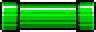
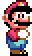
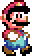
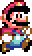
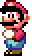
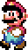
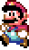
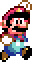
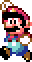
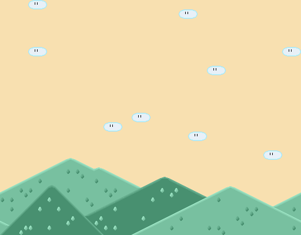

Platformer Quick Level:
Adding Images
First find some images that you want to represent your Blocks. There are a few at the bottom of this page. Download them to your project folder.
Next make sure that your Block class has the following methods and that they return the appropriate instance fields:
public double getX()
public double getY()
public int getWidth()
public int getHeight()
Now add the following class to your project. It extends the Block class to have an Image.
import sacco.*;
import sacco.gui.*;
public class PicBlock extends Block
{
private Picture myImg;
public PicBlock(int x,int y,int w,int h, String imgName)
{
super(x,y,w,h);
myImg = Picture.loadFromFile(imgName);
}
public void paintSelf(PaintBrush brush)
{
brush.drawPicture(myImg, (int)getX(),(int)getY(),(int)getWidth(),(int)getHeight());
}
}
Now go to the constructor of your Canvas. Change Blocks to PicBlocks and add the String that represents the correct image as the last parameter. For example, blockList.add(new Block(100,400,100,200)) would become blockList.add(new PicBlock(100,400,32,32,"questionblock.png")). This would create the same Block, but with the questionblock picture on it.
Creating a Mario Level:
The last thing that you need to do for your Platformer game is to make a basic level with at least 10 jumps to make. This can be entirely done in the constructor by creating and adding PicBlocks or Blocks. Don't worry, you can add both types to the same ArrayList (for more information on this, take AP). Just remember that they take in an x,y,width, and height. The further down the course you go, the larger the x will be.
Images you might want:
The best sizes for these are multiples of 32. For example: the pipe is 64x128, which is 2*32 and 4*32.



Dirt: All blocks are 32x32 and may be combined to create platforms of many sizes. For very large platforms, consider using a for loop where the looping variable increases by 32 each time.


Walking Mario






Jumping Mario


